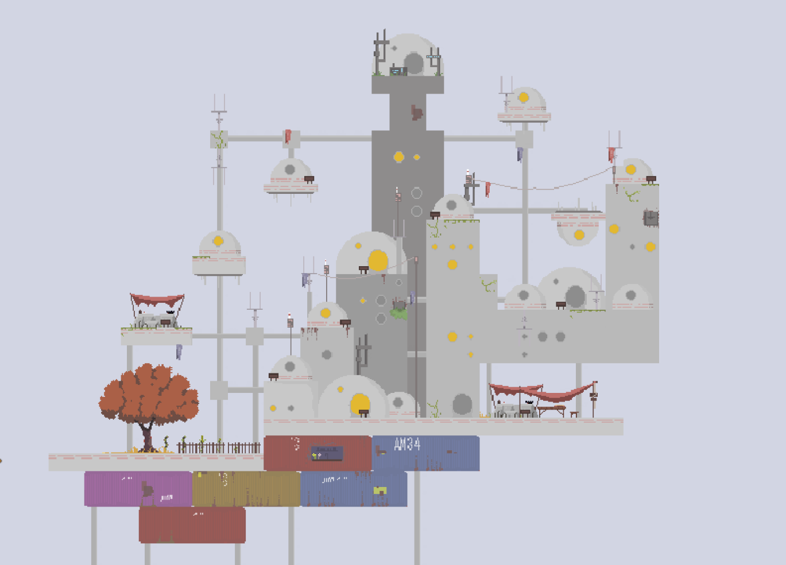
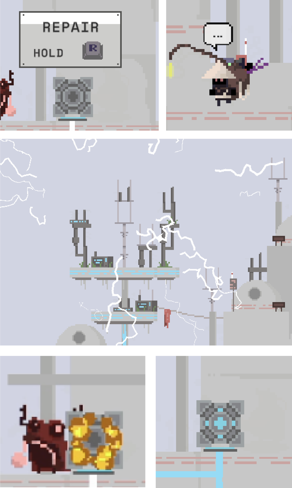

GAME DESIGN
Project case
As part of a bootcamp project, I developed a 2D platform game using Unity Engine. The goal was to build a strong foundation in technical skills, asset creation, and game development concepts. The project was completed over 5 weeks, with a focus on designing game mechanics, progression, and ensuring these elements created an engaging gameplay experience.
My Concept:
Based on my initial research, I developed a concept for my game where The Traveller lands on an unknown planet and questions what happened to it and why its inhabitants live the way they do. The Traveller embarks on a journey across the planet, encountering various villages and local residents. Along the way, he must overcome obstacles and complete tasks to satisfy his curiosity.
Tools:
- Figma
- Unity
- Adobe Illustrator
- Ableton
Conclusion
Despite the challenges, working on this game in Unity was an incredibly rewarding experience. While some minor implementations took more time than expected, I gained valuable insights into improving my approach for future projects, particularly in world design. I’m proud of what I’ve achieved and how much I’ve learned throughout the process.